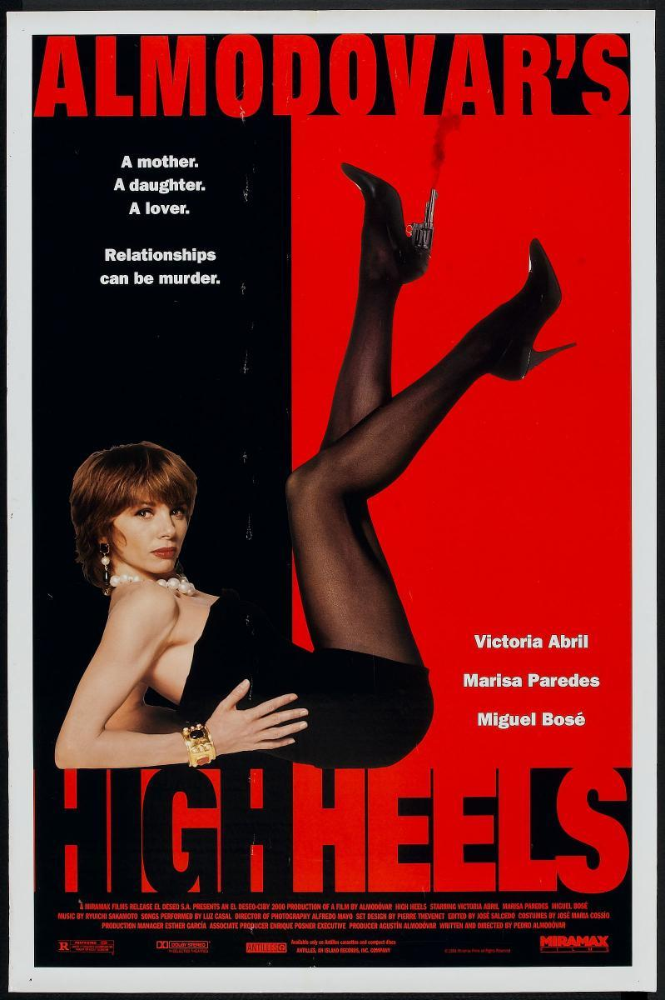
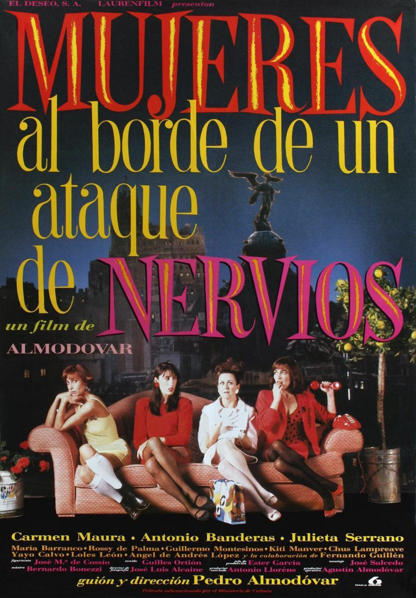

Año: 1991
Duración: 1h 52min
Puntuación: 7 / 10
Sinopsis: Tacones Lejanos es una vez más una historia de mujeres, de madres contada a través de los ojos de sus propios hijos: Rebecca y Eduardo.
Estrellas: Victoria Abril, Marisa Paredes, Miguel Bosé
Premios: 10 premios y 8 nominaciones en total.
Año: 1999
Duración: 1h 41min
Puntuación: 7,8 / 10
Sinopsis: El joven Esteban quiere convertirse en escritor y también descubrir la identidad de su padre, la cual su madre Manuela ocultó cuidadosamente.
Estrellas: Cecilia Roth, Marisa Paredes, Candela Peña
Premios: Ganó 1 premio Óscar, 59 premios y 40 nominaciones en total.

Año: 1988
Duración: 1h 28min
Puntuación: 7,5 / 10
Sinopsis: Una actriz de televisión se encuentra con una variedad de personajes excéntricos después de embarcarse en un viaje para descubrir por qué su amante la dejó abruptamente.
Estrellas: Carmen Maura, Antonio Banderas, Julieta Serrano
Premios: Nominada a 1 premio Óscar, 22 premios y 24 nominaciones en total.
Año: 2006
Duración: 2h 1min
Puntuación: 7,6 / 10
Sinopsis: Después de su muerte, una madre regresa a su pueblo natal para arreglar las situaciones que no pudo resolver durante su vida.
Estrellas: Penélope Cruz, Carmen Maura, Lola Dueñas
Premios: Nominada a 1 premio Óscar, 61 premios y 94 nominaciones en total.